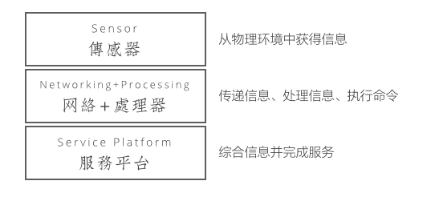
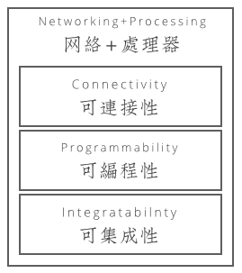
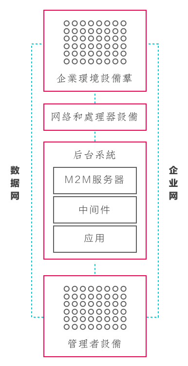

本篇是2013年PwC关于IoT报告中的第二篇，本篇从IoT技术栈的角度讨论了多个层次技术发展对于IoT领域的影响。
The Thing Stack: Technologies that guide customers to their goals
正如上一篇笔记所谈到的，IoT的出现使得更有价值的客户关系出现在交易之后，企业可以通过跟踪和学习的手段向客户提供更关注其目标的产品和服务。
目前大部分的后交易期的客户关系维护主要出现在B2B业务中，例如飞机发动机的实时数据被侦测并返回发动机厂商，由其提供更加定制化和专业的服务。而随着IoT技术（传感器、数据处理、传输、和分析）的成熟和低成本化，售后的新服务模式即将在大众消费市场形成。
面对未来这样的趋势，所有企业的IT组织可能在未来都会遇到这个问题，如何建立一个针对物联网的IT构架（即包含什么组件），这就是作者所提出的"The Thing Stack"，它可能成为IoT时代CIO的蓝图。
这里的“The Thing Stack”包含3个层次：传感器、网络+处理器、服务平台。

传感器（Sensor）：植入在设备或者物理环境中，依靠一个或者多个传感芯片收集信息或探测阈值。
网络+处理器（Networking and computing platform）这个平台上提供接入性（Connectivity）和计算能力（Computing power），将传感器收集的信息直接或处理后信息传给服务平台。
服务平台（Service platform）将原始数据或者分析结果综合在一起，通过终端服务提供体验给消费者。
真正判断IoT的外部趋势可以在这三个层次上、从技术发展、商业环境、用户习惯的三个方面思考。
传感器
国际传感器市场2013年到2018年的复合增长率达到9.2%（来源），到2020年全球传感器市场将接近1544亿美元（来源）。
传感器市场的稳健增长得力于智能手机的持续增长的出货量——从2007年到2014年的7年时间里智能手机出货量增长了10倍（来源），同时越来越多的传感器被集成在智能手机中，智能手机的巨头们也在不停努力拓展传感器新的使用场景。
例如谷歌最新推出的Project Soil项目希望将动作传感（Motion Sensor）的应用提升到一个全新的水平上：Soil的传感器能够侦测每秒高达1万帧的动作。
此外推动传感器技术高速增长，当然还有穿戴式设备的火爆，到2015年2013年穿戴式设备市场传感器出货量只有6700万件，这个数字在2019年预计将达到4亿6600万件（来源）。
从制造技术来看，微机电（MEMS）技术的发展大大降低了传感器的大小和价格，一个三轴加速器的价格在2007至2010年四年间降低了80%（来源），随着MEMS出货量迅速增长，MEMS的生产成本将继续降低，从而进一步刺激传感器的创新。
网络和处理器
The Thing Stack的第二个层次是网络环境与计算能力，这个层次将负责IoT中的连接、处理、和传输。根据使用场景和数据规模的不同，IoT设备的网络和处理器规划也会有差异。
总的来说，IoT方案中通常包含：
- 连接：更加简便的连接性设置；
- 处理：简化的可编程能力，提升处理能力的适应性；
- 传输：通过API的方式连接其他设备并传输关键数据。

IoT有两类方案商，一类提供纯的硬件解决方案（只在第二层），通过具备连接性的可编程计算平台，只指定标准API与其他软件平台相联（如App），；例如Arduino、openPICUS、和Raspberry Pi；另一类则同时涉及到服务层（覆盖完整的客户场景），提供完整的解决方案，例如Arrayent、Ninja Blocks （下图）。
网络和处理器层所涉及的基础元器件价格持续下降，一个标准的Wifi芯片组的价格在十年内（从2002年）下降了3/4。
多种针对连接设备（Connected Devices）更加先进的芯片级解决方案不断推陈出新，例如Qualcomm于2015年5月推出的QCA401x，包括完整的Wifi, IPv6, 和HTTP套装，并包含安全功能的组件，同期推出的还有QCA4531—低价的一站式解决方案，包含连接组件以及可编程的Linux/OpenWRT环境，是连接多个IoT生态系统的理想方案。
服务平台
服务平台真正将上述两个层次所产生的数据变成具备商业或用户价值的转化平台，这个层次上主要包含中间价、数据分析、以及应用层软件，也是真正管理“后交易关系”的平台。
这个平台通常有如下方面需要考虑：
- 简化的接入服务：更加简单的将客户加入到服务中；
- 具备可扩展性：可以接入更多的设备和处理持续扩展的数据；
- 提供集成的开发环境：应用能够快速演化（持续设计和集成）；
- 提供扩展的API：提供标准的RESTful架构与结构与其他云端平台连接；
- 提供数据分级存储：提高服务平台（包括其他服务）对数据更高效的访问；
- 设备管理：对IoT生态中的计算设备和传感器进行管理；
- 及时告警机制：建立告警机制，帮助用户更好使用智能设备；
- 数据分析：能够建立数据分析机制；
- 信息安全：能够建立足够的安全保护框架；
- 管理隐私：能够保证用户隐私不被侵害，以及足够的信息收集和使用的透明性。
服务平台的应用场景通常在云端完成，此类服务平台的提供商主要包含两个：移动端和Web端。
前者通常是所谓M2M（Machine-to-machine）的方案提供商，例如Jasper Wireless，它在云端提供从配置、管理、监控、实施等一站式的企业IoT解决方案，特别是标准化的M2M企业运营体系。
一个基于M2M的IoT解决方案主要包含四大部分，分别是：设备群、网络和处理器设备、后台系统、终端管理者设备。

企业所面临的问题主要是来自于运营商数据网络的差异性，例如，重型挖掘机的生产厂商如何收集深入智利矿区挖掘机所产生的数据。
这同时也成为运营商在未来重要的一个业务增长点，Forrester的一份预测表明，到2016年将有4亿5000万的设备被连接，届时将为运营商产生170亿美元的收入（来源）。
后者如IFTTT，它用简单的编程逻辑将设备和应用进行关联，例如“如果门开了，发送一条短信”。它主要以数据API为主，通过数据的桥接达到设备互联的效果，很少提供跨传感器和网络与处理器的服务。
总结
IoT的基础架构中包含最基础的三个层次，它们分别提供主动获取数据的能力、连接、处理、传输数据的能力、将数据和应用转化成消费者或IT服务的能力。在这三个层次上，无论是技术成熟度、市场需求度和制造成本、还是用户接受程度，都发生了非常大的变化，这种变化使得企业“数字化消费过程”、并专注“后交易关系”成为大势所趋。
简单来说，会有越来越多的传统保险公司用健康保险帮助客户获得健康的生活、越来越多的户外运动品牌，用产品帮助客户形成健康的生活方式、越来越多的汽车品牌尝试用汽车本身减少城市的拥堵和停车问题。
最后的思考
本文的亮点在于提出了一个IoT的基础技术框架，无论是用于企业内部管理、还是基于智能设备的新服务都需要考虑这个技术框架（The Thing Stack），这个框架也是在企业内做IoT转型的CIO必须理解的核心框架。
此外，理解这个框架还可以帮助我们分析未来IoT的技术趋势，判断哪些技术突破可能给这个领域产生举足轻重的影响，例如传感器的制造工艺、网络连接芯片组的解决方案、标准数据API、具有标准性的服务平台。
更有趣的是，通过这个框架，我们可以理解目前IoT依然处于一个不成熟的阶段，因为每个层次上都有具备话语权的企业（芯片厂商、硬件厂商、软件厂商、产品厂商），即在每个层次都缺少有统治地位的标准（参考），这个乱局背后一定是巨大的关于IT服务的需要。
此外，从产品设计的角度，当你仔细思考这个技术栈，你会发现更加“集中式的（Vertical）”的需求，即不同用户场景决定了不同传感器、网络和处理器、以及服务平台的组合，创新变得更加丰富，因此，针对小众市场的产品设计才是未来的趋势。